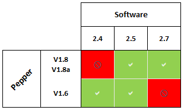
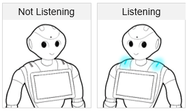
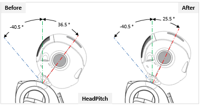

Release Notes - 2.7¶
Quick upgrade guide¶
1. Check compatibility¶
Be aware that 2.7 runs on Pepper 1.8 and 1.8a.
2. Use Pepper’s display to download the new system¶
Warning
Do not use Choregraphe nor the Web page to upgrade Pepper, it could put your robot in an unsupported state.
To upgrade your Pepper, download the system image when available on his display.
For further details, see: Upgrading my Pepper.
Wi-Fi network settings¶
New supported personal securities: WPA 2 Enterprise¶
Pepper now supports also WPA 2 Enterprise.
Note
Only peap and ttls authentication algorithms, with MSChapv2 phase2 are supported.
For further details, see: Supported personal securities.
New sign & feedback¶
The simpler the better
Instead of a complex system involving a three-color eye LEDs feedback and sound feedback, Pepper now uses a single and simple way to tell the human when he is listening:
- When Pepper is listening, his shoulders are blue.
- When he is not listening, his shoulders are off.
See the new signs and feedback in a 30sec. video:
For further details, see: Interacting with Pepper.
Semantic Engine: a new power for Pepper!¶
Pepper can learn!
Thanks to his Semantic Engine, Pepper is able to:
- keep in mind some information,
- acquire new information, and
- use this knowledge in order to answer your questions and requests.
Note
For now, Pepper has a short-term memory, persistent from startup to shut-down. He will forget all his knowledge each time he reboots.
For further details, see: Semantic Engine - What Pepper knows.
Pepper’s head movements tuned¶
In order to make sure Pepper cannot pinch fingers between his head and the top of his tablet, we have redefined the head pitch range of motion:
Now Pepper can move from -40.5 to 25.5° (instead of 36.5°).
For further details, see: Head joints.
As a consequence, when turning the Autonomous life on, as soon as the Stiffness of his motors is on, Pepper must lift his head a little before performing his usual animation.
For further details, see: Switching Autonomous life on and off.